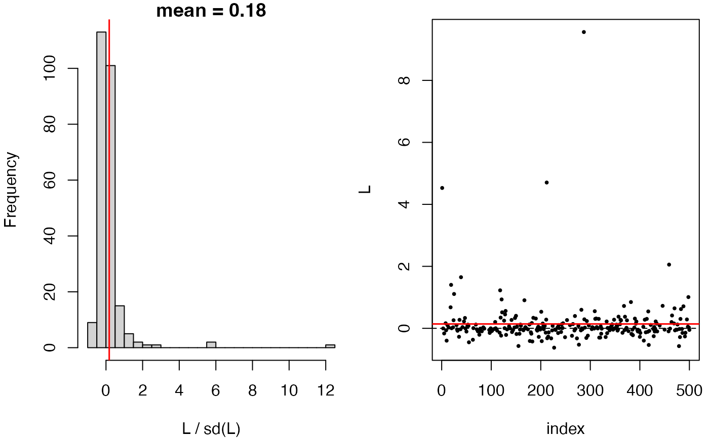
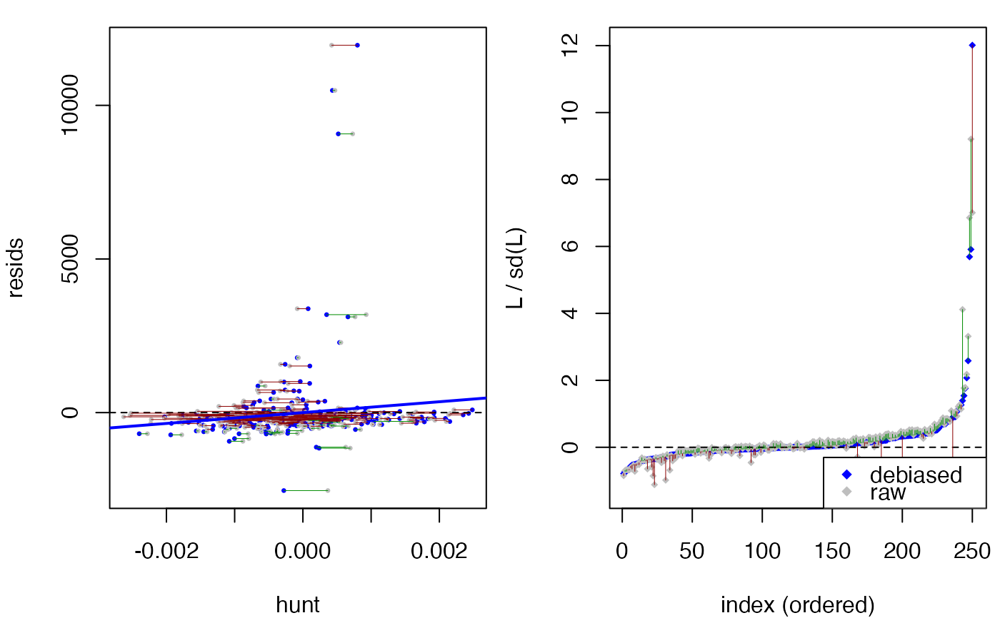
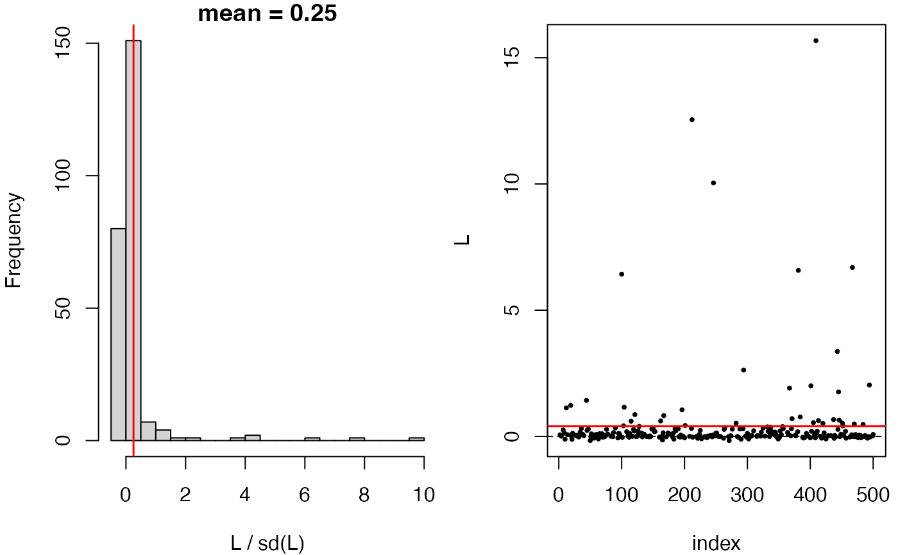
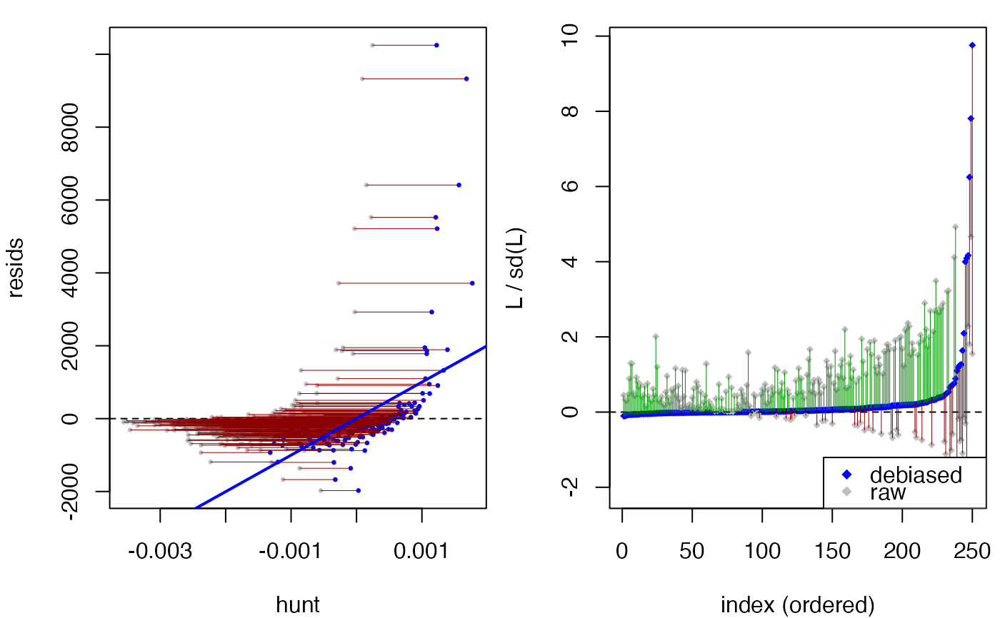

Compare two fitted GLM models
compare_models.glm.RdDebiased score test of the null model fit.0 against the alternative
fit.1. GLM fit.1 is used to hunt for signal that fit.0
potentially misses.
Usage
# S3 method for class 'glm'
compare_models(
fit.0,
fit.1,
hunt.style = "optimal",
trim.outlier.hunt = TRUE,
splits = c(0.5, 0.5),
verbose = FALSE,
...
)Arguments
- fit.0
The null model as a fitted
glmobject.- fit.1
The alternative model as a fitted
glmobject. It must be a supermodel offit.0: every column ofstats::model.matrix(fit.0)must appear (by name) instats::model.matrix(fit.1).fit.0andfit.1must be fit on the same rows in the same order.- hunt.style
Hunting algorithm with the following options.
'optimal': optimal hunting (default). Seehunt_optimal.'wls': a simpler hunting using weighted least squares, which can be less powerful. Seehunt_wls.
- trim.outlier.hunt
If
TRUE(default), extreme values produced by the hunted function will be trimmed using Tukey's IQR rule.- splits
Numeric vector of length 2 or 3 giving the relative sizes of the sample splits; rescaled internally to sum to one. Default is
c(0.5, 0.5), which splits data into two halves for hunt and test respectively. Though typically unnecessary in practice, one can also specify a 3-way split for hunt, debiasing and test respectively.- verbose
Default
FALSE; information is printed if set toTRUE.- ...
Unused; present for S3 generic/method consistency.
Examples
set.seed(42)
n <- 500
dat <- data.frame(x1 = rnorm(n), x2 = rnorm(n), x3 = rnorm(n))
dat$x3 <- dat$x3 + (dat$x1 + dat$x2) / 3
dat$y <- 5 * exp(dat$x1 + dat$x3) + rnorm(n) * 3
fit.0 <- glm(y ~ x1 + x3, family = gaussian(link = "log"),
data = dat, start = rep(1, 3))
fit.1 <- glm(y ~ x1 + x2 + x3, family = gaussian(link = "log"),
data = dat, start = rep(1, 4))
# test fit.0 against fit.1: should not be rejected
compare_models(fit.0, fit.1)
#> Debiased score test:
#> y ~ X, with X consists of (Intercept), x1, x2, x3.
#> (hunt.style = optimal, hunt.method = glm)
#> n = 500, two-way split: hunt = 250, debias & test = 250
#>
#> T = -1.7883, p-value = 0.963138
compare_models(fit.0, fit.1, hunt.style="wls")
#> Debiased score test:
#> y ~ X, with X consists of (Intercept), x1, x2, x3.
#> (hunt.style = wls, hunt.method = glm)
#> n = 500, two-way split: hunt = 250, debias & test = 250
#>
#> T = 0.9726, p-value = 0.165383
anova(fit.0, fit.1)
#> Analysis of Deviance Table
#>
#> Model 1: y ~ x1 + x3
#> Model 2: y ~ x1 + x2 + x3
#> Resid. Df Resid. Dev Df Deviance F Pr(>F)
#> 1 497 4503.2
#> 2 496 4502.9 1 0.241 0.0265 0.8706
# test a misspecified null model: should be rejected
fit.00 <- glm(y ~ x2, family = gaussian(link = "log"),
data = dat, start = rep(1, 2))
compare_models(fit.00, fit.1)
#> Debiased score test:
#> y ~ X, with X consists of (Intercept), x1, x2, x3.
#> (hunt.style = optimal, hunt.method = glm)
#> n = 500, two-way split: hunt = 250, debias & test = 250
#>
#> T = 2.7297, p-value = 0.00316957
plot(compare_models(fit.00, fit.1))


compare_models(fit.00, fit.1, hunt.style="wls")
#> Debiased score test:
#> y ~ X, with X consists of (Intercept), x1, x2, x3.
#> (hunt.style = wls, hunt.method = glm)
#> n = 500, two-way split: hunt = 250, debias & test = 250
#>
#> T = 3.2405, p-value = 0.000596674
plot(compare_models(fit.00, fit.1, hunt.style="wls"))


anova(fit.00, fit.1)
#> Analysis of Deviance Table
#>
#> Model 1: y ~ x2
#> Model 2: y ~ x1 + x2 + x3
#> Resid. Df Resid. Dev Df Deviance F Pr(>F)
#> 1 498 1609320
#> 2 496 4503 2 1604817 88385 < 2.2e-16 ***
#> ---
#> Signif. codes: 0 ‘***’ 0.001 ‘**’ 0.01 ‘*’ 0.05 ‘.’ 0.1 ‘ ’ 1